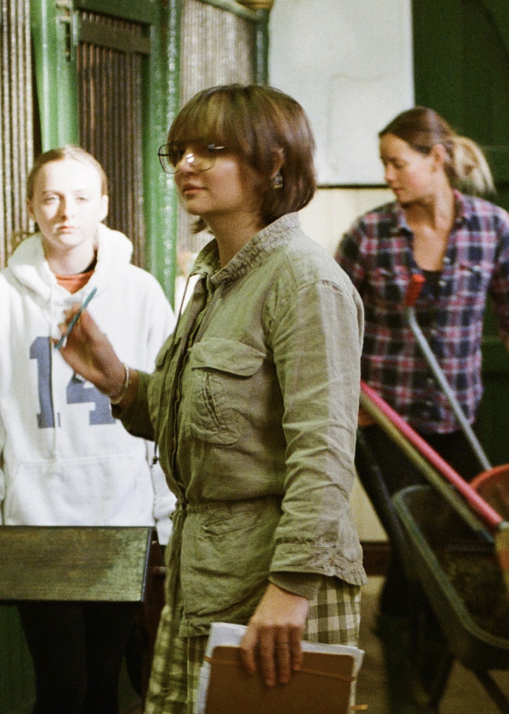
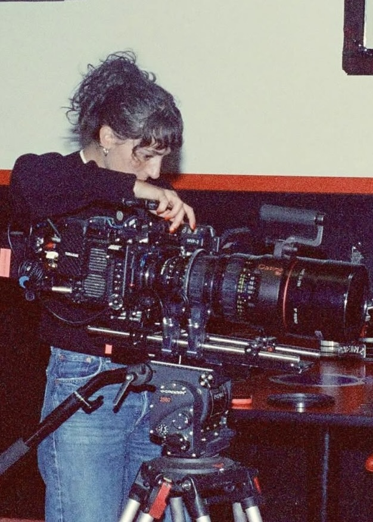
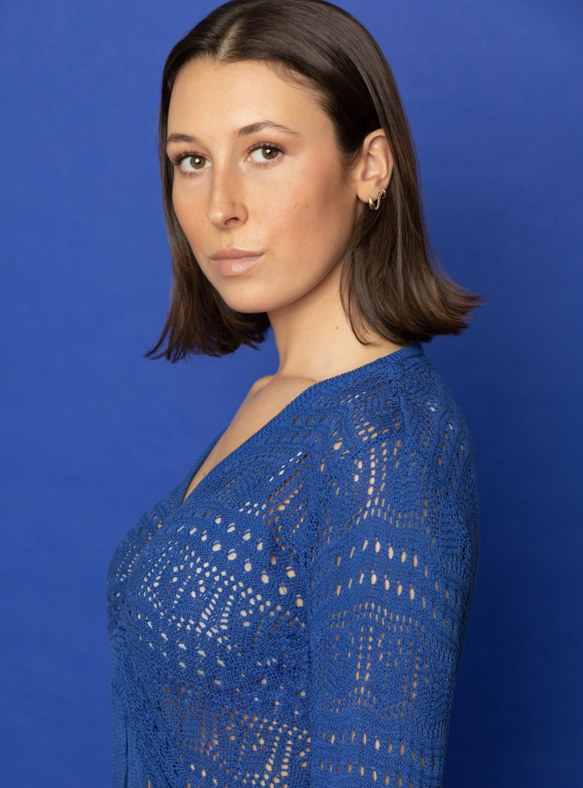
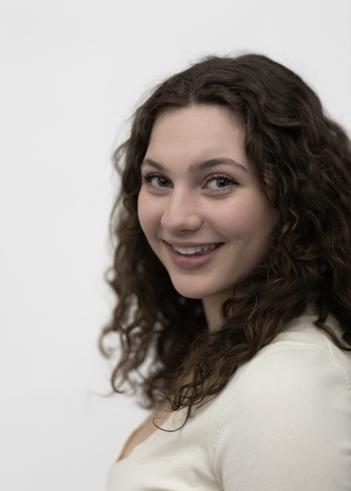
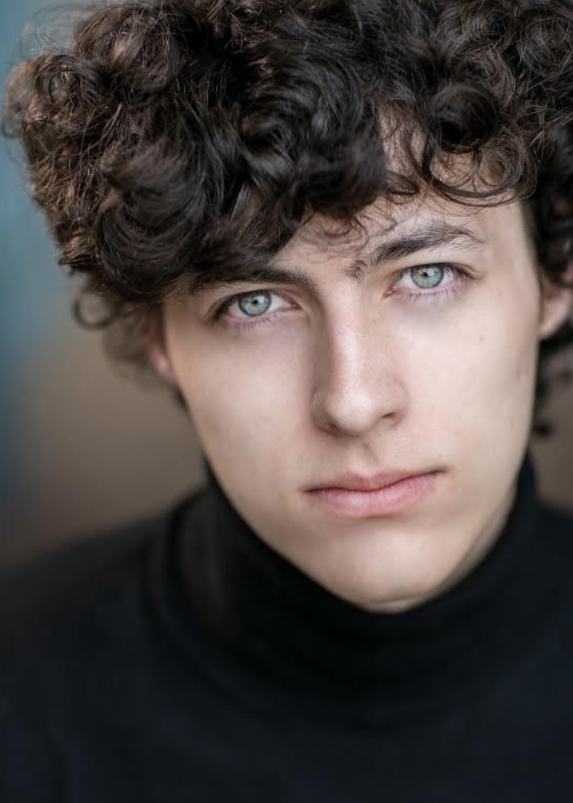

International filmmaker, Halle Skye, is a creator of narrative and historical dramas that depict themes of nostalgia and death.
In May 2024 she graduated NYU Tisch School of the Arts with a BFA in Film & TV.
Her British shorts, MARE and BILLY'S BIRDS, will be circulating the global festival circuit in 2026.
halleskye.com →
Alexandra Mettler is a New York City based Director of Photography, originally from Eugene, OR. She works primarily in the narrative and documentary fields, specializing in 16mm & 35mm film. Her recognized work includes “Robster”, “The Chlorine Bible”, and “Partus”.
She is also the 2024 recipient of the ARRI Volker Bahnnemann Award for achievement in cinematography.
alexandramettler.com →
Carley Lovito is a Director, Producer, and Writer dedicated to telling female centered stories. Her production company 286 cultivates creative community and prioritizes underrepresented female focused narratives, aiming to create spaces where artists and audiences alike feel deeply seen, heard, and inspired.
She has produced and directed award winning films including “Can’t You See I’m Trying” “Holy Water” “Peach Fuzz” and “Everything I Never Told You” and is currently the lead producer of the world premiere of Clifford Odets’ “The Nursery”.
carleylovito.com →
Mira Young is a New York City based producer and actor currently finishing her BFA in Drama at NYU’s Tisch School of the Arts. After spending two semesters interning for Darren Aronofsky’s Protozoa Pictures, Mira spent her Sophomore year producing a plethora of thesis films such as “Concrete Rose”, and has more recently entered into post-production for the rotoscoped short “Sarcophagus”.
Her time at Tisch has taught her the value in creating one's own opportunities, leading her to co-create “Fifty Hounds” which she is both producing and acting in.
miraforresteryoung.com →
Ralph C. Schulz is a Swiss-Peruvian-American film producer, director, actor, and distributor. His award-winning debut film screened in New York, Los Angeles, and Milan and was distributed by Swiss Films. He is the co-founder and CEO of RISE FLIX, a platform connecting emerging filmmakers with industry professionals. Ralph has helped creators secure representation, land production deals, and option feature scripts.
He is the distributor of the Midwestern Emmy-winning short "Room Tone" and various other shorts Academy Award-shortlisted. His credits include HBO’s "And Just Like That" and "The Chair Company", and a documentary produced by three-time Academy Award winner Mark Harris.